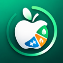

Daily Apps Lab
Apps, free tools and open data
Daily Apps Lab is a small app studio run by Javed Iqbal, an app developer in Pakistan who has been building apps for five years. The main site is dailyappslab.com.
Apps

MacroScout
An AI calorie and macro tracker for people who eat out. Snap your plate, or scan a restaurant menu and see which dishes fit what you have left today. iPhone, iPad, Mac with Apple silicon, and Android.
Garden Reprise
Redesigns a front yard or backyard from one photo. Paint what should change, pick one of seven styles, and the house stays exactly as it is. iPhone, US only for now.
Free tools and open data
The Protein Finder lists fast-food items that meet a protein minimum under a calorie limit at McDonald's, Burger King, Subway, Starbucks and Chipotle. You set the numbers, and it runs in the browser without an app.
The data behind it is open: fast-food protein and calories, US menus, 259 items copied from each chain's own nutrition data, free to reuse under CC BY 4.0.
Guides
Health guides on eating out, protein at fast-food chains and fatty liver are at health.dailyappslab.com. Start with high-protein fast food under 500 calories or how to count calories when eating out.
Yard guides are at plants.dailyappslab.com, including low maintenance landscaping and front yard ideas by style.